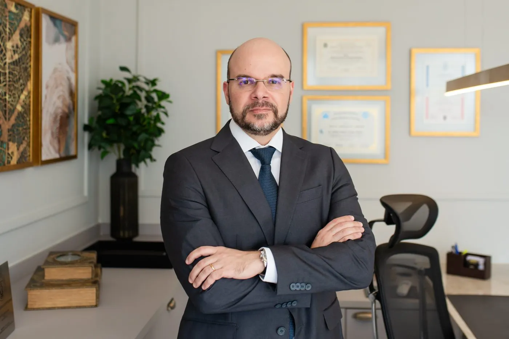
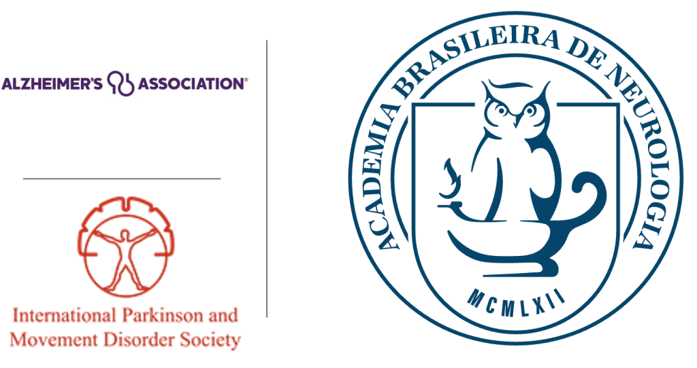
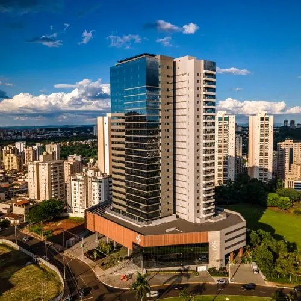

Currículo
Meu nome é Guilherme Riccioppo (CRM-SP: 107200). Fiz minha formação em Neurologia pelo Hospital das Clínicas de Ribeirão Preto (HCRP) entre 2002 e 2005. Adicionalmente, fiz Mestrado (2009) e Doutorado (2014) em Neurologia pela Faculdade de Medicina de Ribeirão Preto. Minhas principais áreas de atuação são nas desordens cognitivas, como na Doença de Alzheimer, e nos distúrbios do movimento, como na Doença de Parkinson.
Sobre mim
Sou membro titular da Academia Brasileira de Neurologia, da International Parkinson and Movement Disorder Society e da Alzheimer’s Association International Society to Advance Alzheimer’s Research and Treatment.

Divido meu tempo entre consultório e docência. Sou Professor Titular de Neurologia da Faculdade de Medicina Barão de Mauá. No passado fui supervisor dos Ambulatórios de Aplicação de Toxina Botulínica (2006 a 2014), de Distúrbios do Movimento (2006 a 2011), de Neurologia Comportamental (2008 a 2014) e de Demências Vasculares (2015 a 2021) do HCRP-USP. Algumas de minhas pesquisas em neurologia estão publicadas em revistas nacionais e internacionais como Brain, Neurology, Movement Disorders, Parkinsonism and Related Disorders e Journal of Neurology (currículo completo).

Onde atendo
Minha clínica está localizada na R. Paschoal Bardaro, 1075, 13º andar, Ed. Le Monde, em Ribeirão Preto/SP.
Dúvidas sobre agendamento ou sobre as consultas podem ser esclarecidas pelo telefone/WhatsApp (16) 99608-3424.